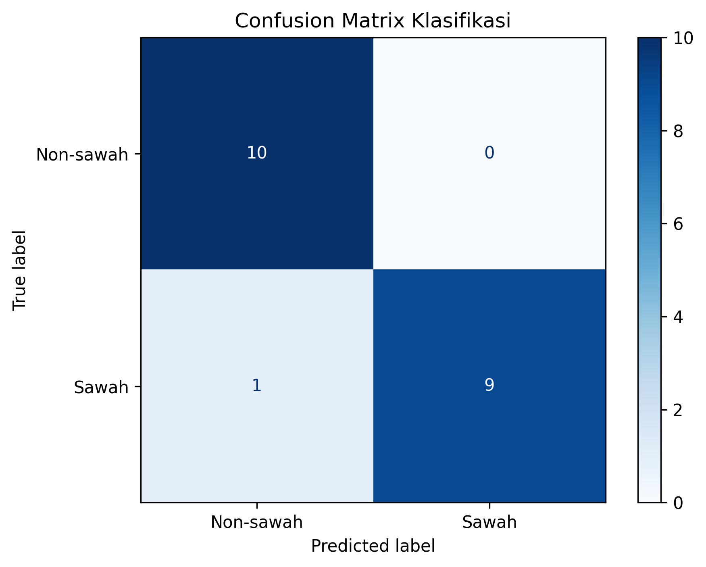

Klasifikasi Sawah dan Non-Sawah#
1. Pengambilan Sampel#
Data sampel dibuat menggunakan QGIS dengan membagi wilayah menjadi dua kelas, yaitu sawah dan non-sawah. Setiap kelas mempunyai 50 poligon sehingga total data yang digunakan adalah 100 sampel.
Kelas |
Label |
Jumlah Sampel |
|---|---|---|
Sawah |
|
50 |
Non-sawah |
|
50 |
Total |
- |
100 |
Poligon disimpan dalam format GeoJSON menggunakan sistem koordinat EPSG:4326 atau WGS 84.
File yang digunakan adalah:
Sampel_sawah.geojsonSampel_Non_sawah.geojson
Setiap poligon dianggap sebagai satu sampel. Nilai piksel Sentinel-2 yang berada di dalam poligon digunakan untuk menghitung nilai rata-rata setiap band.
Oleh karena itu, 50 poligon sawah menghasilkan 50 baris sampel sawah, bukan 50 piksel.
2. Peta Interaktif Sampel#
Peta berikut menampilkan persebaran 50 sampel sawah dan 50 sampel non-sawah. Poligon hijau menunjukkan sawah, sedangkan poligon merah menunjukkan non-sawah.
Jumlah sampel sawah: 50
Jumlah sampel non-sawah: 50
Total sampel: 100
Peta dapat digeser, diperbesar, dan diperkecil. Kontrol layer dapat digunakan untuk menampilkan atau menyembunyikan sampel sawah dan non-sawah.
3. Data Sentinel-2#
Citra yang digunakan berasal dari Sentinel-2 L2A tanggal 4 Oktober 2026. Citra disimpan dalam format TIFF dengan sistem koordinat EPSG:4326.
Band yang digunakan adalah:
Band |
Nama |
Kegunaan |
|---|---|---|
B02 |
Blue |
Mengidentifikasi karakteristik permukaan |
B03 |
Green |
Mengamati pantulan vegetasi hijau |
B04 |
Red |
Membedakan vegetasi dan nonvegetasi |
B08 |
Near Infrared |
Mengidentifikasi tingkat kehijauan vegetasi |
Nilai piksel B02, B03, B04, dan B08 yang berada di dalam setiap poligon dihitung nilai rata-ratanya.
4. Perhitungan NDVI#
NDVI atau Normalized Difference Vegetation Index digunakan untuk mengukur tingkat kehijauan vegetasi berdasarkan band merah dan inframerah dekat.
Rumus NDVI adalah:
Keterangan:
\(B08\) adalah band Near Infrared atau NIR.
\(B04\) adalah band merah atau Red.
Nilai NDVI berada pada rentang \(-1\) sampai \(1\).
Interpretasi nilai NDVI adalah:
Rentang NDVI |
Interpretasi |
|---|---|
Kurang dari 0 |
Air, bayangan, atau nonvegetasi |
0 sampai 0,2 |
Bangunan atau tanah terbuka |
0,2 sampai 0,5 |
Vegetasi sedang |
Lebih dari 0,5 |
Vegetasi rapat dan sehat |
4.1 Contoh Perhitungan NDVI#
Diketahui:
Maka:
Nilai NDVI sebesar 0,50 menunjukkan adanya vegetasi yang cukup rapat.
Kode perhitungan NDVI adalah:
penyebut = b08 + b04
if penyebut == 0:
ndvi = 0
else:
ndvi = (b08 - b04) / penyebut
5. Fitur Klasifikasi#
Fitur yang digunakan dalam proses klasifikasi adalah:
B02
B03
B04
B08
NDVI
Jumlah fitur yang digunakan adalah:
Struktur data klasifikasi adalah:
Kolom |
Keterangan |
|---|---|
B02 |
Rata-rata band biru dalam poligon |
B03 |
Rata-rata band hijau dalam poligon |
B04 |
Rata-rata band merah dalam poligon |
B08 |
Rata-rata band NIR dalam poligon |
NDVI |
Indeks vegetasi dari B08 dan B04 |
kelas |
Label Sawah atau Non-sawah |
6. Polygon Training dan Pixel Training#
Dataset awal terdiri atas 100 poligon, yaitu 50 poligon sawah dan 50 poligon non-sawah.
Data dibagi menjadi 80% training dan 20% testing menggunakan stratifikasi.
Kelas |
Poligon Awal |
Poligon Training |
Poligon Testing |
|---|---|---|---|
Sawah |
50 |
40 |
10 |
Non-sawah |
50 |
40 |
10 |
Total |
100 |
80 |
20 |
Jumlah poligon training adalah:
Piksel di dalam poligon tidak dijadikan baris training secara individual. Piksel valid di dalam setiap poligon digunakan untuk menghitung nilai rata-rata band.
Alurnya adalah:
Komponen |
Jumlah atau Penggunaan |
|---|---|
Poligon sawah training |
40 poligon |
Poligon non-sawah training |
40 poligon |
Total poligon training |
80 poligon |
Piksel training individual |
Tidak dijadikan baris terpisah |
Penggunaan piksel |
Dihitung rata-rata per poligon |
Baris data training |
80 baris |
Fitur setiap baris |
B02, B03, B04, B08, dan NDVI |
Jumlah piksel pada setiap poligon dapat berbeda karena ukuran dan bentuk poligon tidak selalu sama.
7. Algoritma Random Forest#
Klasifikasi dilakukan menggunakan Random Forest Classifier.
Random Forest membentuk beberapa pohon keputusan. Hasil klasifikasi akhir ditentukan berdasarkan keputusan terbanyak dari seluruh pohon tersebut.
Kode yang digunakan adalah:
import pandas as pd
from sklearn.ensemble import RandomForestClassifier
from sklearn.metrics import (
accuracy_score,
classification_report,
confusion_matrix,
)
from sklearn.model_selection import train_test_split
data_sampel = pd.read_csv(
"Sampel_Sentinel2_Sawah_NonSawah.csv"
)
daftar_fitur = [
"B02",
"B03",
"B04",
"B08",
"NDVI",
]
X = data_sampel[daftar_fitur]
y = data_sampel["kelas"]
X_train, X_test, y_train, y_test = train_test_split(
X,
y,
test_size=0.20,
random_state=42,
stratify=y,
)
model = RandomForestClassifier(
n_estimators=100,
random_state=42,
)
model.fit(
X_train,
y_train,
)
hasil_prediksi = model.predict(
X_test
)
akurasi = accuracy_score(
y_test,
hasil_prediksi,
)
laporan = classification_report(
y_test,
hasil_prediksi,
)
matriks = confusion_matrix(
y_test,
hasil_prediksi,
)
print("Jumlah fitur:", len(daftar_fitur))
print("Jumlah data training:", len(X_train))
print("Jumlah data testing:", len(X_test))
print("Akurasi:", akurasi)
print(laporan)
print(matriks)
8. Tampilan Data Training#
Data training merupakan 80 sampel yang dipilih dari keseluruhan 100 sampel.
Kode berikut digunakan untuk menampilkan seluruh data training pada web:
Jumlah data training: 80
| B02 | B03 | B04 | B08 | NDVI | kelas | |
|---|---|---|---|---|---|---|
| Nomor | ||||||
| 1 | 0.226733 | 0.214267 | 0.209067 | 0.221800 | 0.029553 | Non-sawah |
| 2 | 0.056406 | 0.080125 | 0.098444 | 0.222000 | 0.385579 | Sawah |
| 3 | 0.056488 | 0.081413 | 0.084456 | 0.178763 | 0.358281 | Sawah |
| 4 | 0.091383 | 0.112550 | 0.122650 | 0.173875 | 0.172751 | Sawah |
| 5 | 0.080890 | 0.105870 | 0.115255 | 0.238620 | 0.348612 | Sawah |
| 6 | 0.212033 | 0.205933 | 0.203033 | 0.217550 | 0.034516 | Non-sawah |
| 7 | 0.208950 | 0.194500 | 0.197800 | 0.212550 | 0.035945 | Non-sawah |
| 8 | 0.056793 | 0.084513 | 0.092907 | 0.228473 | 0.421827 | Sawah |
| 9 | 0.160225 | 0.167325 | 0.189750 | 0.191150 | 0.003675 | Non-sawah |
| 10 | 0.092550 | 0.147808 | 0.102125 | 0.202033 | 0.328475 | Sawah |
| 11 | 0.170160 | 0.172360 | 0.194060 | 0.189620 | -0.011572 | Non-sawah |
| 12 | 0.171467 | 0.177000 | 0.194333 | 0.193233 | -0.002838 | Non-sawah |
| 13 | 0.087308 | 0.109969 | 0.105754 | 0.156169 | 0.192482 | Sawah |
| 14 | 0.036300 | 0.061336 | 0.051082 | 0.134900 | 0.450679 | Sawah |
| 15 | 0.062800 | 0.091350 | 0.081100 | 0.097483 | 0.091741 | Sawah |
| 16 | 0.182900 | 0.191500 | 0.206267 | 0.215167 | 0.021118 | Non-sawah |
| 17 | 0.022708 | 0.041700 | 0.027308 | 0.088325 | 0.527674 | Sawah |
| 18 | 0.295240 | 0.263300 | 0.246800 | 0.272240 | 0.049014 | Non-sawah |
| 19 | 0.243550 | 0.224750 | 0.225950 | 0.236900 | 0.023658 | Non-sawah |
| 20 | 0.039031 | 0.077108 | 0.074800 | 0.278415 | 0.576462 | Sawah |
| 21 | 0.052982 | 0.081327 | 0.078773 | 0.169782 | 0.366153 | Sawah |
| 22 | 0.162000 | 0.169900 | 0.187425 | 0.188150 | 0.001930 | Non-sawah |
| 23 | 0.283420 | 0.264800 | 0.253140 | 0.271120 | 0.034296 | Non-sawah |
| 24 | 0.172100 | 0.172380 | 0.191680 | 0.189720 | -0.005139 | Non-sawah |
| 25 | 0.175200 | 0.174800 | 0.190100 | 0.188975 | -0.002968 | Non-sawah |
| 26 | 0.165140 | 0.172820 | 0.198500 | 0.199160 | 0.001660 | Non-sawah |
| 27 | 0.044939 | 0.084328 | 0.068167 | 0.196783 | 0.485438 | Sawah |
| 28 | 0.165071 | 0.168329 | 0.183443 | 0.184229 | 0.002137 | Non-sawah |
| 29 | 0.047000 | 0.078607 | 0.087329 | 0.287907 | 0.534540 | Sawah |
| 30 | 0.069533 | 0.102000 | 0.108925 | 0.259367 | 0.408485 | Sawah |
| 31 | 0.100979 | 0.133132 | 0.117916 | 0.245058 | 0.350279 | Sawah |
| 32 | 0.056650 | 0.081733 | 0.084400 | 0.266167 | 0.518494 | Sawah |
| 33 | 0.169320 | 0.170300 | 0.190840 | 0.188920 | -0.005056 | Non-sawah |
| 34 | 0.062223 | 0.089962 | 0.074262 | 0.129346 | 0.270543 | Sawah |
| 35 | 0.048611 | 0.078267 | 0.068522 | 0.145122 | 0.358540 | Sawah |
| 36 | 0.210900 | 0.202000 | 0.201660 | 0.214500 | 0.030854 | Non-sawah |
| 37 | 0.166375 | 0.167625 | 0.183800 | 0.184125 | 0.000883 | Non-sawah |
| 38 | 0.081067 | 0.101608 | 0.117742 | 0.190792 | 0.236765 | Sawah |
| 39 | 0.101418 | 0.130864 | 0.120409 | 0.165600 | 0.158005 | Sawah |
| 40 | 0.247040 | 0.228740 | 0.224580 | 0.242280 | 0.037913 | Non-sawah |
| 41 | 0.181967 | 0.192100 | 0.213800 | 0.209233 | -0.010795 | Non-sawah |
| 42 | 0.102727 | 0.130500 | 0.120820 | 0.178347 | 0.192290 | Sawah |
| 43 | 0.073245 | 0.094527 | 0.097932 | 0.221714 | 0.387247 | Sawah |
| 44 | 0.041709 | 0.095918 | 0.054218 | 0.175018 | 0.526967 | Sawah |
| 45 | 0.238586 | 0.225057 | 0.225043 | 0.235914 | 0.023584 | Non-sawah |
| 46 | 0.175583 | 0.181583 | 0.205800 | 0.199183 | -0.016338 | Non-sawah |
| 47 | 0.053486 | 0.075464 | 0.055771 | 0.070321 | 0.115391 | Sawah |
| 48 | 0.231783 | 0.236450 | 0.239283 | 0.243100 | 0.007912 | Non-sawah |
| 49 | 0.030456 | 0.052078 | 0.031833 | 0.041667 | 0.133787 | Sawah |
| 50 | 0.254613 | 0.230338 | 0.226575 | 0.242712 | 0.034387 | Non-sawah |
| 51 | 0.062478 | 0.086778 | 0.092978 | 0.200444 | 0.366253 | Sawah |
| 52 | 0.018841 | 0.040400 | 0.020594 | 0.106535 | 0.676013 | Sawah |
| 53 | 0.175900 | 0.185625 | 0.197650 | 0.195850 | -0.004574 | Non-sawah |
| 54 | 0.299917 | 0.285733 | 0.275083 | 0.283950 | 0.015861 | Non-sawah |
| 55 | 0.054622 | 0.088928 | 0.085428 | 0.287867 | 0.542303 | Sawah |
| 56 | 0.086962 | 0.106556 | 0.121994 | 0.182275 | 0.198118 | Sawah |
| 57 | 0.069033 | 0.093272 | 0.103367 | 0.196594 | 0.310800 | Sawah |
| 58 | 0.236025 | 0.225200 | 0.223700 | 0.232075 | 0.018375 | Non-sawah |
| 59 | 0.063022 | 0.099278 | 0.077844 | 0.206322 | 0.452121 | Sawah |
| 60 | 0.164475 | 0.174825 | 0.192300 | 0.193600 | 0.003369 | Non-sawah |
| 61 | 0.212060 | 0.201000 | 0.199260 | 0.211520 | 0.029846 | Non-sawah |
| 62 | 0.186000 | 0.199400 | 0.218300 | 0.220800 | 0.005693 | Non-sawah |
| 63 | 0.072122 | 0.124678 | 0.089344 | 0.216433 | 0.415625 | Sawah |
| 64 | 0.056189 | 0.082872 | 0.107633 | 0.229461 | 0.361406 | Sawah |
| 65 | 0.181125 | 0.184775 | 0.202900 | 0.200975 | -0.004766 | Non-sawah |
| 66 | 0.045988 | 0.083271 | 0.079576 | 0.306594 | 0.587869 | Sawah |
| 67 | 0.222686 | 0.221886 | 0.228000 | 0.226257 | -0.003837 | Non-sawah |
| 68 | 0.031445 | 0.083127 | 0.048991 | 0.200555 | 0.607359 | Sawah |
| 69 | 0.099720 | 0.155330 | 0.110360 | 0.208290 | 0.307328 | Sawah |
| 70 | 0.318360 | 0.288940 | 0.268500 | 0.287500 | 0.034173 | Non-sawah |
| 71 | 0.220000 | 0.208767 | 0.210383 | 0.222033 | 0.026942 | Non-sawah |
| 72 | 0.080636 | 0.133264 | 0.093329 | 0.217457 | 0.399402 | Sawah |
| 73 | 0.195500 | 0.198300 | 0.206080 | 0.206160 | 0.000194 | Non-sawah |
| 74 | 0.192240 | 0.196360 | 0.203840 | 0.205540 | 0.004153 | Non-sawah |
| 75 | 0.085240 | 0.107393 | 0.086773 | 0.133793 | 0.213178 | Sawah |
| 76 | 0.199786 | 0.193271 | 0.196557 | 0.204600 | 0.020049 | Non-sawah |
| 77 | 0.168600 | 0.169480 | 0.188960 | 0.187620 | -0.003558 | Non-sawah |
| 78 | 0.058367 | 0.082220 | 0.068827 | 0.107927 | 0.221212 | Sawah |
| 79 | 0.283175 | 0.280450 | 0.284450 | 0.276650 | -0.013901 | Non-sawah |
| 80 | 0.217980 | 0.215040 | 0.216100 | 0.221280 | 0.011843 | Non-sawah |
Ringkasan data training adalah:
Komponen |
Jumlah |
|---|---|
Data training sawah |
40 sampel |
Data training non-sawah |
40 sampel |
Total data training |
80 sampel |
Jumlah fitur |
5 fitur |
Setiap baris data training merupakan hasil rata-rata piksel dalam satu poligon.
9. Hasil Klasifikasi#
Hasil pengujian memperoleh akurasi sebesar:
Ringkasan hasil prediksi adalah:
Kelas |
Data Uji |
Prediksi Benar |
Prediksi Salah |
|---|---|---|---|
Non-sawah |
10 |
10 |
0 |
Sawah |
10 |
9 |
1 |
Total |
20 |
19 |
1 |
Nilai evaluasi setiap kelas adalah:
Kelas |
Precision |
Recall |
F1-Score |
|---|---|---|---|
Non-sawah |
0.91 |
1.00 |
0.95 |
Sawah |
1.00 |
0.90 |
0.95 |


Fig. 4 Confusion matrix hasil klasifikasi sawah dan non-sawah.#
Confusion matrix menunjukkan bahwa 10 sampel non-sawah diprediksi dengan benar. Pada kelas sawah, sembilan sampel diprediksi dengan benar dan satu sampel diprediksi sebagai non-sawah.
10. Peta Hasil Klasifikasi#
Peta berikut menampilkan hasil klasifikasi sawah dan non-sawah menggunakan Random Forest.
Peta dapat digeser, diperbesar, dan diperkecil. Kontrol layer dapat digunakan untuk menampilkan atau menyembunyikan hasil klasifikasi.
Ringkasan hasil akhir adalah:
Keterangan |
Hasil |
|---|---|
Algoritma |
Random Forest Classifier |
Poligon awal |
100 poligon |
Poligon training |
80 poligon |
Poligon testing |
20 poligon |
Jumlah fitur |
5 fitur |
Akurasi |
95% |
Kelas |
Sawah dan Non-sawah |
11. Kesimpulan#
Sebanyak 100 poligon digunakan, terdiri atas 50 poligon sawah dan 50 poligon non-sawah.
Data training terdiri atas 80 poligon, yaitu 40 sawah dan 40 non-sawah. Data testing terdiri atas 20 poligon, yaitu 10 sawah dan 10 non-sawah.
Setiap poligon dipadukan dengan Sentinel-2 L2A untuk memperoleh rata-rata B02, B03, B04, dan B08. NDVI dihitung menggunakan B08 dan B04.
Jumlah fitur yang digunakan adalah lima fitur, yaitu B02, B03, B04, B08, dan NDVI.
Algoritma Random Forest memperoleh akurasi sebesar 95%, dengan 19 prediksi benar dari 20 data testing.
Peta sampel dan peta hasil klasifikasi ditampilkan secara interaktif agar persebaran sawah dan non-sawah dapat diamati berdasarkan lokasinya.